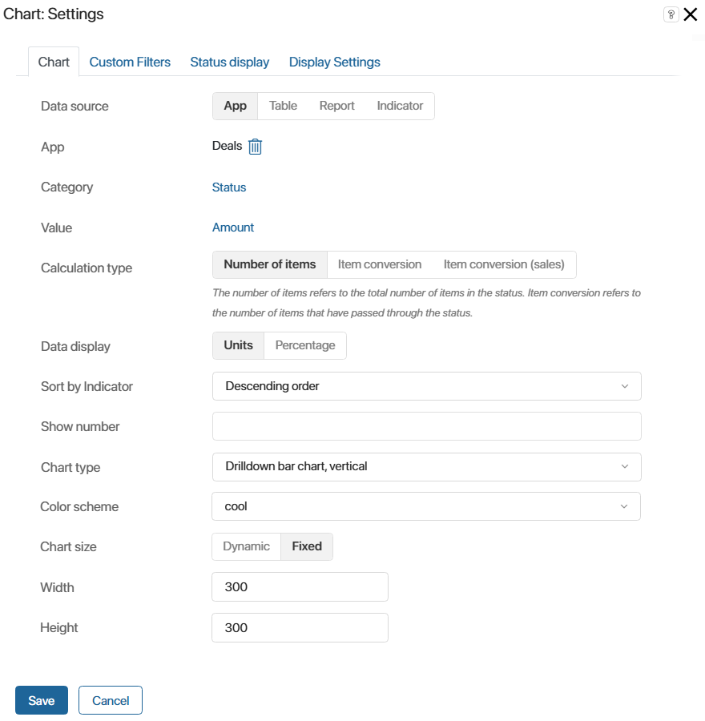

Виджет отображает данные в виде графика. В качестве источника данных можно выбрать:
- приложение из любого раздела;
- переменную типа Таблица, созданную в контексте страницы, на которой размещается график;
- компонент системы Отчет, который собирает информацию из нескольких приложений
- компонент Показатель, с помощью которого можно выявить эффективность выполнения определённых этапов бизнес-процесса.
Например, с помощью виджета вы можете построить линейную диаграмму годового дохода компании или на круговом графике показать вклад каждого менеджера в общий объём продаж.
Создание графика
Чтобы настроить виджет, откройте форму приложения или страницу в дизайнере интерфейсов. Перетащите виджет График с правой панели на поле для моделирования или нажмите кнопку + Виджет. Откроется окно настроек.
Вкладка «График»
Укажите общие настройки графика:
- В поле Источник данных выберите, какие данные вы хотите просматривать в виде графика:

- Приложение — включите опцию, чтобы выбрать любое приложение и построить график по его данным. Ознакомьтесь с примером настройки графика в разделе «Данные из приложения»;
- Таблица — опция доступна при размещении виджета на отдельной странице. Отметьте её, а затем укажите переменную типа Таблица из контекста страницы. График строится на основании данных из таблицы. Пример настройки графика приведён в разделе «Примеры использования графика»;
- Отчет — включите опцию, чтобы выбрать созданный отчёт, агрегирующий данные из нескольких приложений. Посмотрите пример настройки графика в разделе «Примеры использования графика»;
- Показатель — включите опцию и выберите опубликованный показатель, который применяется в бизнес-процессе для отслеживания данных. С примером настройки графика можно ознакомиться в разделе «Данные показателя процесса».
- Укажите настройки графика:

- Измерение — выберите поле, по которому необходимо построить график. Если указать свойство типа Категория, график сформируется по заданным в свойстве вариантам.
Обратите внимание на особенности использования свойства типа Приложение в качестве параметра измерения:
- источник графика Приложение — если на форме есть поле типа Приложение, параметром измерения можно указать вложенные свойства этого приложения, но не ссылку на определённый элемент. Например, в сделке присутствует запись связанного с ней контакта. Вы можете выбрать любое поле из контекста приложения Контакты и построить по нему график;
- источник графика Отчет — в качестве параметра измерения можно использовать колонку отчёта, созданную из поля типа Приложение. В этом случае в графике будет отображаться название связанного элемента. Например, в отчёте из контекста заказа в виде колонки добавлена компания‑заказчик. Вы можете выбрать эту колонку и отображать в графике название компании;
- Показатель — выберите показатель, по которому будет строиться график. Укажите значение Количество или свойство типа Число, Деньги. В зависимости от источника данных для выбора доступны: для приложения свойства из его контекста, для таблицы — её колонки, для отчёта — колонки таблицы, в которой агрегированы данные.
После выбора свойства напротив его названия укажите параметр для построения графика: значение поля, сумму значений или минимальное, максимальное, среднее значение. Обратите внимание, если в поле Измерение выбрано свойство типа Дата, в качестве параметра для показателя нельзя указать опцию Значение;
- Дополнительный показатель (Ось Y) — для линейных графиков укажите дополнительный показатель, который будет отображаться на оси Y;
- Тип расчета — настройка появляется, если в качестве измерения выбрано поле Статус, в качестве показателя — Количество:
- Количество элементов — показывается количество элементов, находящихся в каждом статусе;
- Конверсия элементов, Конверсия элементов (продажи) — отображается соотношение количества элементов, прошедших через каждый статус. Подробнее о настройке графиков по конверсии элементов читайте в статье «Конверсия сделок и лидов».
- Представление данных — выберите, как отображать значения по показателю графика:
- Единицы — как число, например, как количество элементов или сумму;
- Проценты — как процент, например, как долю от общего количества элементов или общей суммы.
- Сортировка по показателю — по умолчанию в графике используется сортировка по значениям параметра измерения, например, по названию компании или статусу. Вы можете сделать основной сортировку по показателю, выбрав в поле По возрастанию или По убыванию. Тогда сортировка по измерению будет использоваться как дополнительная. Например, если в качестве измерения выбрано название сделки, в качестве показателя — её бюджет, то значения будут сортироваться по указанной сумме и дополнительно по наименованию;
- Отображать количество — вы можете ограничить объём отображаемых данных. Например, при настроенной сортировке по бюджету с помощью этой опции можно отобразить топ‑5 самых прибыльных сделок. Также это позволяет сделать график более компактным, если он размещён не на отдельной странице.
Для настройки ограничения укажите в поле число, которое определит, сколько в графике будет столбцов, строк и т. п., в зависимости от его типа. Чтобы в график включались данные по всем элементам, оставьте поле пустым;
- Тип графика — укажите тип графика:
- Столбчатый вертикальный;
- Столбчатый горизонтальный;
- Линейный;
- Линейный с областью;
- Круговой;
- Кольцевой;
- Продвинутый круговой;
- Сетка из круговых;
- Числовые карты;
- Древовидная карта;
- Спидометр;
- Столбчатый вертикальный с drill down;
- Столбчатый горизонтальный с drill down;
- Воронка с drill down — доступен только для графиков по конверсии элементов;
- Таблица с drill down.
Начало внимание
Типы графиков с drill down применяются для источников данных Отчет и Приложение и доступны только для пользователей с лицензией решения CRM, в котором включены приложения Лиды и Сделки.
Конец внимание
- Цветовая схема — выберите цветовое отображение графика;
- Размер графика — выберите одну из доступных опций:
- Динамический — размер графика подстраивается под объём отображаемых данных;
- Фиксированный — укажите ширину и высоту графика в пикселях.
- При выборе таблицы в качестве источника данных вы можете построить график по нескольким показателям. Для этого укажите дополнительные настройки:

- Группировка по нескольким показателям — опция появляется, если вы настраиваете Столбчатый вертикальный или Столбчатый горизонтальный график. Отметьте её, чтобы указать несколько показателей, которые будут отображаться на оси X;
Как будет выглядеть столбчатый график с группировкой по нескольким показателям, смотрите в разделе «Примеры использования графика».
Вкладка «Пользовательские фильтры»
Если вы настраиваете график по данным из приложения, отчёта или показателя, вы увидите вкладку Пользовательские фильтры. Перейдите на неё, чтобы указать Поля для фильтрации — свойства приложения, которые будут использоваться в качестве фильтров для построения графика.
Вкладка «Отображение статусов»
Вкладка появится в окне настроек виджета, если в качестве источника данных было выбрано приложение с настроенными статусами. Чтобы график формировался только по элементам в определённых статусах, отметьте их на вкладке.
Для приложений Лиды и Сделки график можно построить по выбранным воронкам и настроенным в них статусам. При этом каждая воронка будет отображаться на отдельной вкладке. Для этого:
- На вкладке Отображение статусов включите опцию Отображать воронки.
- Отметьте воронки, которые нужно добавить в график.
- В каждой воронке выберите статусы, по элементам в которых будет формироваться график.

Вкладка «Настройки отображения»
С лицензией решения CRM, включающего в себя приложения Лиды и Сделки, и при выборе источников данных Отчет или Приложение в виджете доступны типы графиков Столбчатый вертикальный с drill down, Столбчатый горизонтальный с drill down, Воронка с drill down и Таблица с drill down. С их помощью можно просмотреть список элементов, по которым построен каждый столбец в готовом графике.
В настройках виджета на вкладке Настройки отображения выбираются свойства источника, которые будут показаны в списке элементов. По умолчанию в таблице отображается только название элемента. Чтобы добавить свойства в список с детальной информацией, выберите их на вкладке.
Как будет выглядеть столбчатый график с drill down, смотрите в разделе «Примеры использования графика».
Для завершения настроек графика нажмите Сохранить. После этого на поле для моделирования отобразится макет графика с данными. При необходимости отредактируйте настройки виджета, чтобы изменить график.
Чтобы настроенная форма стала доступна пользователям, нажмите Сохранить и Опубликовать на верхней панели дизайнера интерфейсов.
Примеры использования графика
Данные из приложения
Рассмотрим, как построить график с источником данных Приложение, на примере отчётов по приложению Сделки.
начало внимание
Использовать приложения Лиды и Сделки в виджете График можно только при наличии лицензии решения CRM, в котором включены эти приложения.
конец внимание
Пример 1
Для приложений Сделки и Лиды вы можете настроить график для отображения конверсии элементов по статусам. Это позволит отследить, какой процент сделок закрывается успешно.
При настройке отчёта вы можете выбрать тип графика Воронка с drill down, Столбчатый горизонтальный с drill down или Столбчатый вертикальный с drill down. Тогда появится возможность посмотреть список элементов, перешедших в каждый из статусов на графике. Для этого в готовом графике нажмите на значение в любом столбце.

Подробнее о настройке такого отчёта читайте в статье «Конверсия сделок и лидов».
Пример 2
Постройте график для просмотра общей выручки отдела продаж и отслеживания наиболее прибыльных сделок. Для этого:
- Разместите виджет График на отдельной странице.
- В качестве источника данных выберите приложение Сделки. В поле Измерение укажите название сделки, а в поле Показатель — её бюджет.
- Выберите тип графика Продвинутый круговой.
- На вкладке Пользовательские фильтры добавьте поля сделки, по которым можно будет сортировать данные на странице, например, Ответственный, Дата поставки, Воронка.
- Сохраните и опубликуйте страницу.
Вы увидите на графике всю прибыль компании, бюджет каждой сделки, а также процентное соотношение этой суммы и общей выручки.

Данные из таблицы
Для построения графика с источником данных Таблица выполните следующие действия:
- Создайте страницу и откройте её в дизайнере интерфейсов.
- Откройте вкладку Контекст. Создайте свойство типа Таблица, перейдите в его настройки и добавьте колонки.
- Вернитесь на вкладку Шаблон. На правой панели конструктора нажмите Свойства и перетащите созданное свойство на поле для моделирования. Это необходимо, чтобы на странице пользователи могли заполнять таблицу данными.
- Вынесите на поле виджет График. В настройках в поле Источник данных выберите опцию Таблица и укажите название созданной переменной из контекста. Задайте показатели для построения графика, его параметры, тип, цветовую схему и размер.
- Сохраните и опубликуйте страницу.
Пример 1
Виджет можно использовать для отображения статистики готовых заказов на отдельной странице.
Когда пользователи заполняют колонки таблицы, в графике типа Спидометр показывается сумма каждого выполненного заказа, а также общий доход компании.

Пример 2
Рассмотрим, как работает опция Группировка по нескольким показателям.
Например, на отдельную страницу добавьте таблицу, которая показывает прибыль от заказов на указанную дату, и график типа Столбчатый вертикальный. Суммы в таблице будут распределены по колонкам в зависимости от группы заказов: опт, розница или заказы от ИП.
Чтобы в графике прибыль от разных групп заказов отображалась в виде отдельных столбцов, в настройках виджета включите опцию Группировка по нескольким показателям. В качестве показателей выберите свойства типа Деньги из таблицы.
Когда пользователи заполняют таблицу данными, строится график, в котором сумма по каждой группе заказов отображается в отдельном столбце. Это позволяет сравнить доходы и оценить, какая из групп приносит компании наибольшую выручку.

Данные из отчёта
Отчёты агрегируют данные из нескольких приложений-источников. Виджет График позволяет визуализировать эти данные. Подробнее о том, как настроить и использовать отчёт, читайте в разделе «Отчет».
В отчёте информация представлена в виде таблицы. Колонки этой таблицы можно указать в качестве показателей, по которым строится график.
Рассмотрим, как построить график для отчёта, в котором в качестве источников выбраны приложения Заказы, Договоры и Счета. Отчёт содержит информацию о заказах, включая связанные с ними договоры и сумму счетов по каждому договору.
С помощью графика можно отслеживать, какой процент от общей выручки компании составляет сумма каждого заказа. Для этого в поле Измерение выберите название заказа, а в поле Показатель — сумму по договору. Укажите тип графика Сетка из круговых. Это позволит просматривать показатели по каждому заказу в отдельности.
Сохраните настройки и опубликуйте страницу. Теперь на ней отображаются круговые графики для каждого заказа. В них указано название заказа, сумма по договору и процент от общей прибыли компании.

Данные показателя процесса
Показатель позволяет отслеживать эффективность исполнения этапов бизнес-процесса. Например, выяснить, сколько времени проходит между назначением задачи и её завершением. Чтобы фиксировать значение в ходе процесса, на его схеме используется графический элемент Установить значение показателя. Отображать данные можно с помощью виджета График.
Допустим, при оформлении сделки менеджер в рамках отдельной задачи предлагает клиентам дополнительные услуги. На схеме процесса после задачи размещён графический элемент, чтобы с помощью показателя отслеживать количество отказов от услуг. Вы можете настроить график и отобразить, сколько отказов получено за определённый период при исполнении экземпляров процесса.
Для этого:
- Создайте страницу и разместите на ней виджет График.
- В настройках графика в качестве источника данных выберите Показатель.
- В поле Измерение укажите свойство показателя, которое соответствует анализируемому параметру этапа процесса. В данном примере переменная называется Значение.
- В поле Показатель графика укажите свойство показателя, которое содержит значения, полученные из процесса. В данном случае это Количество.
- Остальные настройки можно оставить по умолчанию.
- На вкладке Пользовательские фильтры выберите фильтрацию по времени события, чтобы видеть количество экземпляров с отказом от услуг за период.
- Сохраните виджет и опубликуйте страницу.